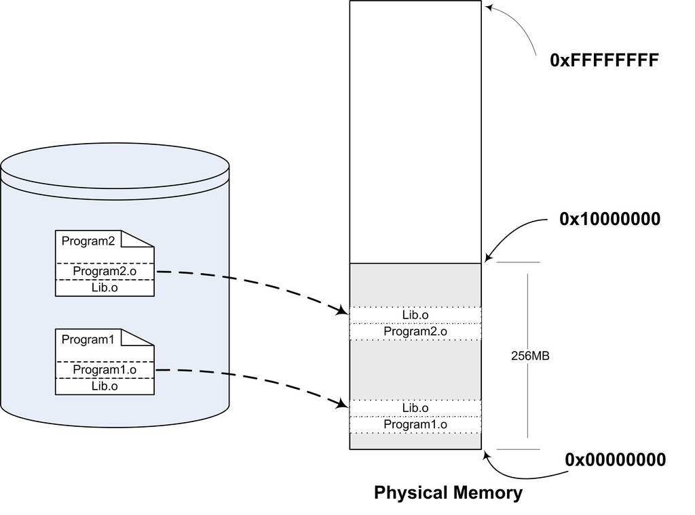
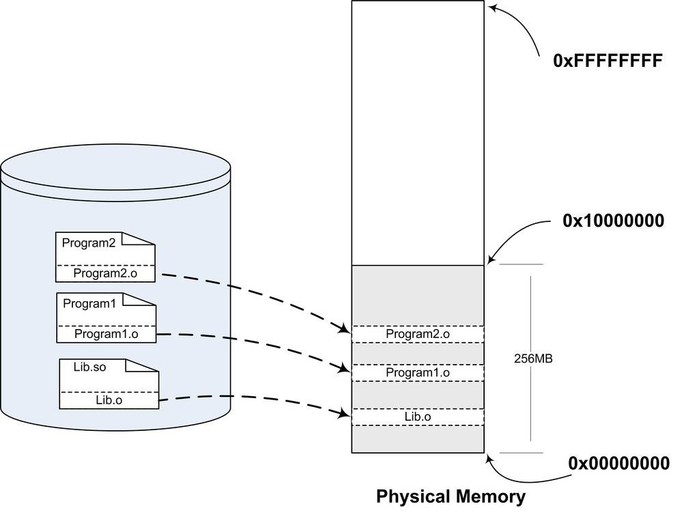

7.1 為什麼要動態連結
靜態連結使得不同的程式開發者和部門能夠相對獨立地開發和測試自己的程式模組，從某種意義上來講大大促進了程式開發的效率，原先限製程式的規模也隨之擴大。但是慢慢地靜態連結的諸多缺點也逐步暴露出來，比如浪費記憶體和磁碟空間、模組更新困難等問題，使得人們不得不尋找一種更好的方式來組織程式的模組。
記憶體和磁碟空間
靜態連結這種方法的確很簡單，原理上很容易理解，實踐上很難實現，在作業系統和硬體不發達的早期，絕大部分系統採用這種方案。隨著計算機軟體的發展，這種方法的缺點很快就暴露出來了，那就是靜態連線的方式對於計算機記憶體和磁碟的空間浪費非常嚴重。特別是多程式作業系統情況下，靜態連結極大地浪費了記憶體空間，想象一下每個程式內部除了都保留著printf()函式、scanf()函式、strlen()等這樣的公用庫函式，還有數量相當可觀的其他庫函式及它們所需要的輔助資料結構。在現在的Linux系統中，一個普通程式會使用到的C語言靜態函式庫至少在1 MB以上，那麼，如果我們的機器中執行著100個這樣的程式，就要浪費近100 MB的記憶體；如果磁碟中有2 000個這樣的程式，就要浪費近2 GB的磁碟空間，很多Linux的機器中，/usr/bin下就有數千個執行檔。
比如圖7-1所示的Program1和Program2分別包含Program1.o和Program2.o兩個模組，

並且它們還共用Lib.o這兩模組。在靜態連線的情況下，因為Program1和Program2都用到了Lib.o這個模組，所以它們同時在連結輸出的執行檔Program1和Program2有兩個副本。當我們同時執行Program1和Program2時，Lib.o在磁碟中和記憶體中都有兩份副本。當系統中存在大量的類似於Lib.o的被多個程式共享的目的檔時，其中很大一部分空間就被浪費了。在靜態連結中，C語言靜態函式庫是很典型的浪費空間的例子，還有其他數以千計的庫如果都需要靜態連結，那麼空間浪費無法想象。
程式開發和發布
空間浪費是靜態連結的一個問題，另一個問題是靜態連結對程式的更新、部署和發布也會帶來很多麻煩。比如程式Program1所使用的Lib.o是由一個第三方廠商提供的，當該廠商更新了Lib.o的時候（比如修正了lib.o裡面包含的一個Bug），那麼Program1的廠商就需要拿到最新版的Lib.o，然後將其與Program1.o連結後，將新的Program1整個發布給使用者。這樣做的缺點很明顯，即一旦程式中有任何模組更新，整個程式就要重新連結、發布給使用者。比如一個程式有20個模組，每個模組1 MB，那麼每次更新任何一個模組，使用者就得重新獲取這個20 MB的程式。如果程式都使用靜態連結，那麼透過網路來更新程式將會非常不便，因為一旦程式任何位置的一個小改動，都會導致整個程式重新下載。
動態連結
要解決空間浪費和更新困難這兩個問題最簡單的辦法就是把程式的模組相互分割開來，形成獨立的檔案，而不再將它們靜態地連結在一起。簡單地講，就是不對那些組成程式的目的檔進行連結，等到程式要執行時才進行連結。也就是說，把連結這個過程推遲到了執行時再進行，這就是動態連結（Dynamic Linking）的基本思想。
還是以Program1和Program2為例，假設我們保留Program1.o、Program2.o和Lib.o三個目的檔。當我們要執行Program1這個程式時，系統首先載入Program1.o，當系統發現Program1.o中用到了Lib.o，即Program1.o依賴於Lib.o，那麼系統接著載入Lib.o，如果Program1.o或Lib.o還依賴於其他目的檔，系統會按照這種方法將它們全部載入至記憶體。所有需要的目的檔載入完畢之後，如果依賴關係滿足，即所有依賴的目的檔都存在於磁碟，系統開始進行連結工作。這個連結工作的原理與靜態連結非常相似，包括符號解析、地址重定位等，我們在前面已經很詳細地介紹過了。完成這些步驟之後，系統開始把控制權交給Program1.o的程式入口處，程式開始執行。這時如果我們需要執行Program2，那麼系統只需要載入Program2.o，而不需要重新載入Lib.o，因為記憶體中已經存在了一份Lib.o的副本（見圖7-2），系統要做的只是將Program2.o和Lib.o連結起來。
很明顯，上面的這種做法解決了共享的目的檔多個副本浪費磁碟和記憶體空間的問題，可以看到，磁碟和記憶體中只存在一份Lib.o，而不是兩份。另外在記憶體中共享一個目的檔

模組的好處不僅僅是節省記憶體，它還可以減少物理頁面的換入換出，也可以增加CPU快取的命中率，因為不同程式間的資料和指令訪問都集中在了同一個共享模組上。
上面的動態連結方案也可以使程式的升級變得更加容易，當我們要升級程式庫或程式共享的某個模組時，理論上只要簡單地將舊的目的檔覆蓋掉，而無須將所有的程式再重新連結一遍。當程式下一次執行的時候，新版本的目的檔會被自動載入到記憶體並且連結起來，程式就完成了升級的目標。
當一個程式產品的規模很大的時候，往往會分割成多個子系統及多個模組，每個模組都由獨立的小組開發，甚至會使用不同的程式語言。動態連結的方式使得開發過程中各個模組更加獨立，耦合度更小，便於不同的開發者和開發組織之間獨立進行開發和測試。
程式可擴充套件性和相容性
動態連結還有一個特點就是程式在執行時可以動態地選擇載入各種程式模組，這個優點就是後來被人們用來製作程式的外掛（Plug-in）。
比如某個公司開發完成了某個產品，它按照一定的規則製定好程式的介面，其他公司或開發者可以按照這種介面來編寫符合要求的動態連結檔案。該產品程式可以動態地載入各種由第三方開發的模組，在程式執行時動態地連結，實現程式功能的擴充套件。
動態連結還可以加強程式的相容性。一個程式在不同的平台執行時可以動態地連結到由作業系統提供的動態連結庫，這些動態連結庫相當於在程式和作業系統之間增加了一個中間層，從而消除了程式對不同平台之間依賴的差異性。比如作業系統A和作業系統B對於printf()的實現機制不同，如果我們的程式是靜態連結的，那麼程式需要分別連結成能夠在A執行和在B執行的兩個版本並且分開發布；但是如果是動態連結，只要作業系統A和作業系統B都能提供一個動態連結庫包含printf()，並且這個printf()使用相同的介面，那麼程式只需要有一個版本，就可以在兩個作業系統上執行，動態地選擇相應的printf()的實現版本。當然這只是理論上的可能性，實際上還存在不少問題，我們會在後面繼續探討關於動態連結模組之間相容性的問題。
從上面的描述來看，動態連結是不是一種“萬能膏藥”，包治百病呢？很遺憾，動態連結也有諸多的問題及令人煩惱和費解的地方。很常見的一個問題是，當程式所依賴的某個模組更新後，由於新的模組與舊的模組之間介面不相容，導致了原有的程式無法執行。這個問題在早期的Windows版本中尤為嚴重，因為它們缺少一種有效的共用函式庫版本管理機制，使得使用者經常出現新程式安裝完之後，其他某個程式無法正常工作的現象，這個問題也經常被稱為“DLL Hell”。
動態連結的基本實現
動態連結的基本思想是把程式按照模組拆分成各個相對獨立部分，在程式執行時才將它們連結在一起形成一個完整的程式，而不是像靜態連結一樣把所有的程式模組都連結成一個個單獨的執行檔。那麼我們能不能按照前面例子中所描述的那樣，直接使用目的檔進行動態連結呢？這個問題的答案是：理論上是可行的，但實際上動態連結的實現方案與直接使用目的檔稍有差別。我們將在後面分析目的檔和動態連結檔案的區別。
動態連結涉及執行時的連結及多個檔案的載入，必需要有作業系統的支援，因為動態連結的情況下，程式的虛擬地址空間的分佈會比靜態連結情況下更為複雜，還有一些儲存管理、記憶體共享、程式執行緒等機制在動態連結下也會有一些微妙的變化。目前主流的作業系統幾乎都支援動態連結這種方式，在Linux系統中，ELF動態連結檔案被稱為動態共享物件（DSO，Dynamic Shared Objects），簡稱共享物件，它們一般都是以“.so”為副檔名的一些檔案；而在Windows系統中，動態連結檔案被稱為動態連結庫（Dynamical Linking Library），它們通常就是我們平時很常見的以“.dll”為副檔名的檔案。
從本質上講，普通可執行程式和動態連結庫中都包含指令和資料，這一點沒有區別。在使用動態連結庫的情況下，程式本身被分為了程式主要模組（Program1）和動態連結庫（Lib.so），但實際上它們都可以看作是整個程式的一個模組，所以當我們提到程式模組時可以指程式主模組也可以指動態連結庫。
在Linux中，常用的C語言庫的執行庫glibc，它的動態連結形式的版本儲存在“/lib”目錄下，檔名叫做“libc.so”。整個系統只保留一份C語言庫的動態連結檔案“libc.so”，而所有的C語言編寫的、動態連結的程式都可以在執行時使用它。當程式被載入的時候，系統的動態連結器會將程式所需要的所有動態連結庫（最基本的就是libc.so）載入到程式的地址空間，並且將程式中所有未決議的符號繫結到相應的動態連結庫中，並進行重定位工作。
程式與libc.so之間真正的連結工作是由動態連結器完成的，而不是由我們前面看到過的靜態連結器ld完成的。也就是說，動態連結是把連結這個過程從本來的程式載入前被推遲到了載入的時候。可能有人會問，這樣的做法的確很靈活，但是程式每次被載入時都要進行重新進行連結，是不是很慢？的確，動態連結會導致程式在效能的一些損失，但是對動態連結的連結過程可以進行最佳化，比如我們後面要介紹的延遲繫結（Lazy Binding）等方法，可以使得動態連結的效能損失盡可能地減小。據估算，動態連結與靜態連結相比，效能損失大約在5%以下。當然經過實踐的證明，這點效能損失用來換取程式在空間上的節省和程式構建和升級時的靈活性，是相當值得的。